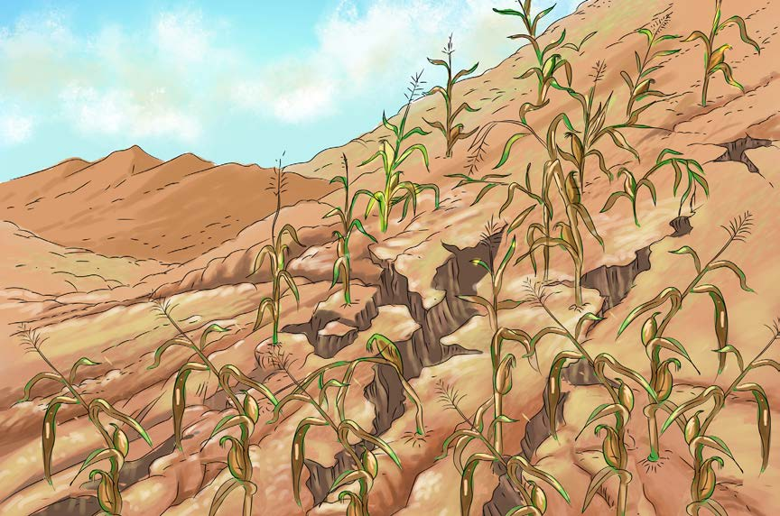

Athari zitokanazo na shughuli za kilimo kisichofaa katika mazingira
Pamoja na faida zitokanazo na kilimo, shughuli hii isipofanyika kwa uangalifu inaweza kuharibu mazingira. Kwa mfano, kilimo katika miteremko ya milima husababisha mmomonyoko wa udongo. Kilimo cha kuhamahama ambacho kinahusisha kukata miti na kuchoma majani na misitu husababisha udongo kupoteza rutuba, ukame na mmomonyoko wa udongo. Vilevile, kilimo cha kutumia dawa zenye kemikali za kuua wadudu na magugu na matumizi yasiyo sahihi ya mbolea za viwandani husababisha ardhi kupoteza rutuba yake ya asili na kuua viumbehai vinavyoishi ardhini. Kielelezo namba 7 kinawasilisha mmomonyoko wa udongo kutokana na kilimo katika miteremko ya milima.
